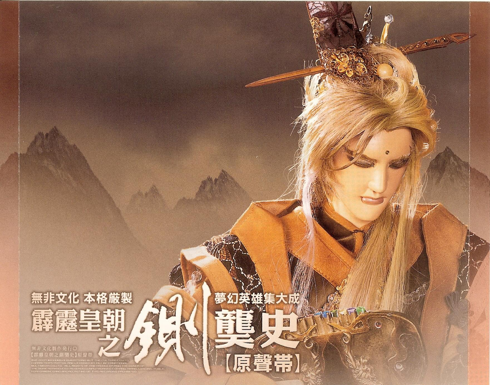
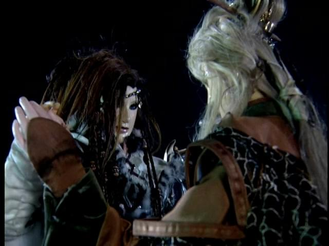
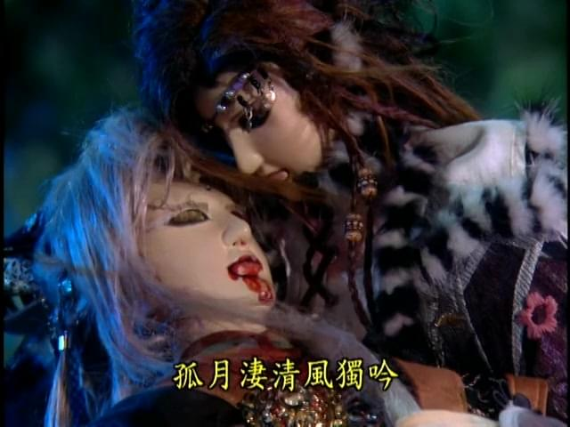
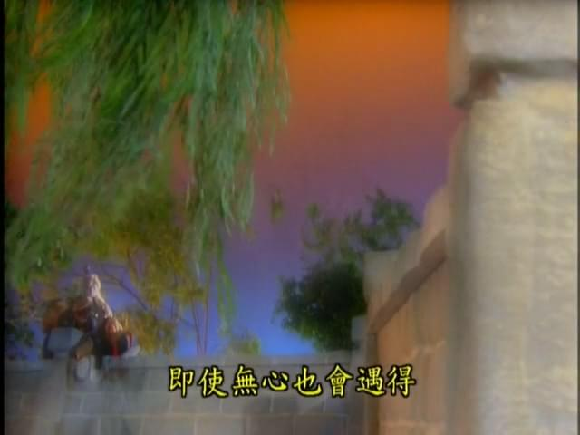

記皇甫定濤成為本命的緣起
我在補霹靂時，有段時間有在百度霹靂吧玩，因此常常被劇透、被雷到。也許是因為這個人物不算特別熱門，所以並沒有被雷到他們的結局。
現在想起來，在看到鍘龑史、開疆紀之前，就有聽過這號人物。雖然說並非大名鼎鼎如雷貫耳，如練峨眉、棄天帝這般的角色。
比較有印象的是貓姐，一個在霹靂吧認識的道友，她就很喜歡皇甫定濤，也曾經提過他是好老公/好男友的代表之一。
要論皇甫定濤，無論你喜不喜歡風飛沙這個角色，也肯定是要從她說起。
皇甫定濤的出場是鋪梗鋪了一陣子的。從玅筑玄華、梅神官、三口劍等人的談話中慢慢開始提到風飛沙過去有段難忘的回憶。也提到了令風飛沙無法忘懷的這個男人的名字：皇甫定濤。
鍘龑史第18集。BGM，思念之風，響起。我也沒意識到這首曲子應該是初次播出。總之，風飛沙在漂亮的花樹底下，開始回憶起皇甫定濤。
這是皇甫定濤的樣子第一次在劇中出現。
「喔！原來他就是皇甫定濤。」我模模糊糊想起了一些在霹靂吧中玩、或者在其他論壇混時間時，有些略微的印象。
至於他說了什麼、風飛沙在幹嘛，我在重看之前根本忘得一乾二淨。
或許有某些人在本命初出場時，一眼就萌上、就注意到他/她，進而成為本命；但我不是。更搞笑的是，那時候我連認真在看劇都不算——我是處於一個隨便看看的狀態。畢竟皇龍紀高潮之後，鍘龑史顯得略為無聊，尤其是六禍蒼龍智力直直下落。
那時候，我更喜歡師九如，把神經兮兮的策馬天下整得服服貼貼的。並且對於九如底迪的美貌流口水中。問天譴、鬼伶仃我也十分喜歡，可惜，活的時間真短啊。

開疆紀
開疆紀，支線多到眼花，而且各支線關聯微弱。之後也會寫一篇開疆紀的簡單劇評。總之，開疆紀雖然有我的本命在，也有大牆頭（師九如）在，但真的不好看。
對於皇甫定濤與風飛沙在開疆紀剛開始到中期，滿拖沓的劇情，雖然沒有看得很煩，但滿無感的。
這樣，他又怎會成了我回坑霹靂，邁入第五年，終於決定的本命呢？
還是有些徵兆的。
皇甫定濤與風飛沙的愛情線，開疆紀8~17，平心而論，就是拖戲。風飛沙每次說「我下不了決心」，我真的覺得她被編劇寫壞了，簡直換了個人。風飛沙跟封緋根本就兩個人嘛。
開疆紀18~20這三集，照劇情他們兩個是待在仙靈地界，都沒有出場，直到第21集，劇情開始加速。
兩人外加應該已經被盜帳號的杜九煙前往天涯歸谷，找夏雪蓮子。路上闖關滿PRG的。我只對可怕的夏雪河童有點印象，剩下劇情也是記得稀稀落落。
之後皇甫定濤連救仙靈地界眾人、與荻神官逮到鳳無首、與荻神官在夕月湖畔商議大事等等，應是在我沒有察覺時，就已經大大刷了好感。
濤沙終曲
真的是到最後最後，皇甫定濤身承神之力，心脈俱碎，捂嘴，向天吐血時，我才突然被虐到了。
對坐傳功。「吾需要時間，記住妳的面容。」「讓我解除你這世的痛苦……」

將吾留在夕月湖，當塵沙之風揚起，每日晨昏，風中將傳送排簫之曲，吾之心音。
最後，在夕月湖畔，「放開的掌心，不動的身影，嚥下滿腔熱血，不再言，不再語」。
雙月影 襄月影
無月可伴 自憐影
雙月影 霜月影
孤月淒清 風獨吟
天半月 水半月
半月難圓 花飄零
– 雙月影（作詞：蘇玟，演唱：阿輪）
背景音樂是雙月影。完美的配樂中，看著風飛沙抱著皇甫定濤，低頭流淚，我被虐到了，真的被狠狠的虐到了。
好慘啊。但是好淒美。
我補劇時從來沒有哭過，但是會非常心塞。我每次都是自己回頭去重看某些特別有感的片段時才被虐哭。佾雲之死、慕少艾之死、藺無雙之死等等我都有被虐哭過。我之後再找機會重看了濤沙的最後幾段（無視中間拖戲的部分），有幾次被虐哭了。
皇甫定濤的生命在一點一滴地失去時，風飛沙也是一點一滴地獲得神之力，終成女神。
真的好殘忍，好淒美，那時候真的一直在想：編劇怎麼想得出這種兇殘的結局？

濤沙唯一的缺憾是，中間的拖戲。我從來沒討厭過風飛沙，我之後也會寫一篇關於風飛沙的評論。對於我來說，任何角色，要是在一夜之間，失去妹妹、準妹夫、義兄而性情大變我都能接受。從瀟灑的女俠頓時成了渴求尋回愛情的女人，我也能理解。只是中間的劇情，要是再寫得好一點就完美了。（可以參考PTT一位道友寫的[心得]重看風飛沙與皇甫定濤。）
我也不認為風飛沙配不上皇甫定濤。愛情本來就是毫無道理的啊。真希望他們兩個可以幸福收場，永遠在一起，而不是天人永隔。（我還寫了他們的同人文喔。）
有位道友說過，風飛沙她妹妹可以追隨三口劍而去，但她連殉情的選擇權都沒有。雖然說，若不是這樣的悲劇收場，也不會讓這對如此令人難以忘懷。
緣起結束
這篇的內容差不多到此了。
我喜歡這個角色，是毫無疑問的。但是距離成為本命，尚有非常大的差距。就算重看被虐哭的時候，我也沒想到，他會成為我的本命。
之後的一些巧合，以及機會，才讓我愈來愈喜歡他，不可自拔，直到皇甫定濤終成我的本命。
現在想來，還真是不可思議。也許，真如皇甫定濤所說：
如有緣至，即使無心也會遇得；如有緣盡，任何心中的不捨，也無法挽留。
– 皇甫定濤，霹靂皇朝之鍘龑史第18集
這也是他在劇中說的第一句話喔。

（待續）